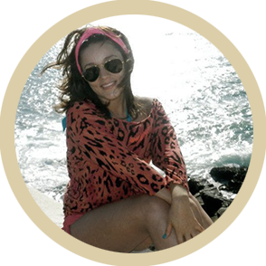
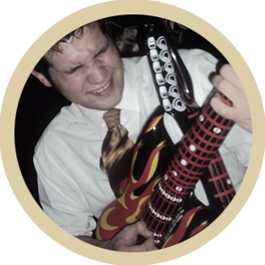

Hace 9 años que el destino nos juntó. Fue una noche de otoño en nuestra ciudad natal, San Luis,
donde la casualidad y la vagancia nos presentó y donde comenzaría una relación de amistad de
adolescentes.
 
A pesar de ser muy diferentes (una versión moderna de "Yo oigo a Serrat y tu
Locomía") supimos entendernos y compartir largas horas de plática,
alegrías por nuestros logros, apoyarnos en nuestras caídas y
claro compartir las borracheras, de esas que duraban hasta
el amanecer. Una de las etapas más difíciles para ambos
fue definitivamente llevar una relación a distancia por
casi 4 años aunque esto no fue impedimento sino solo
una prueba de fortaleza en nuestra relación que concluyó
con éxito cuando Gustavo decide trasladarse a la bella Tijuana
para residir.
Estar juntos estos últimos años nos ha traído muchas alegrías y ha reforzado nuestro amor, un
amor que ha ido madurando para convertirse en una nueva relación que deseamos mantener por
el resto de nuestras vidas y de la cual queremos sean cómplices y testigos.